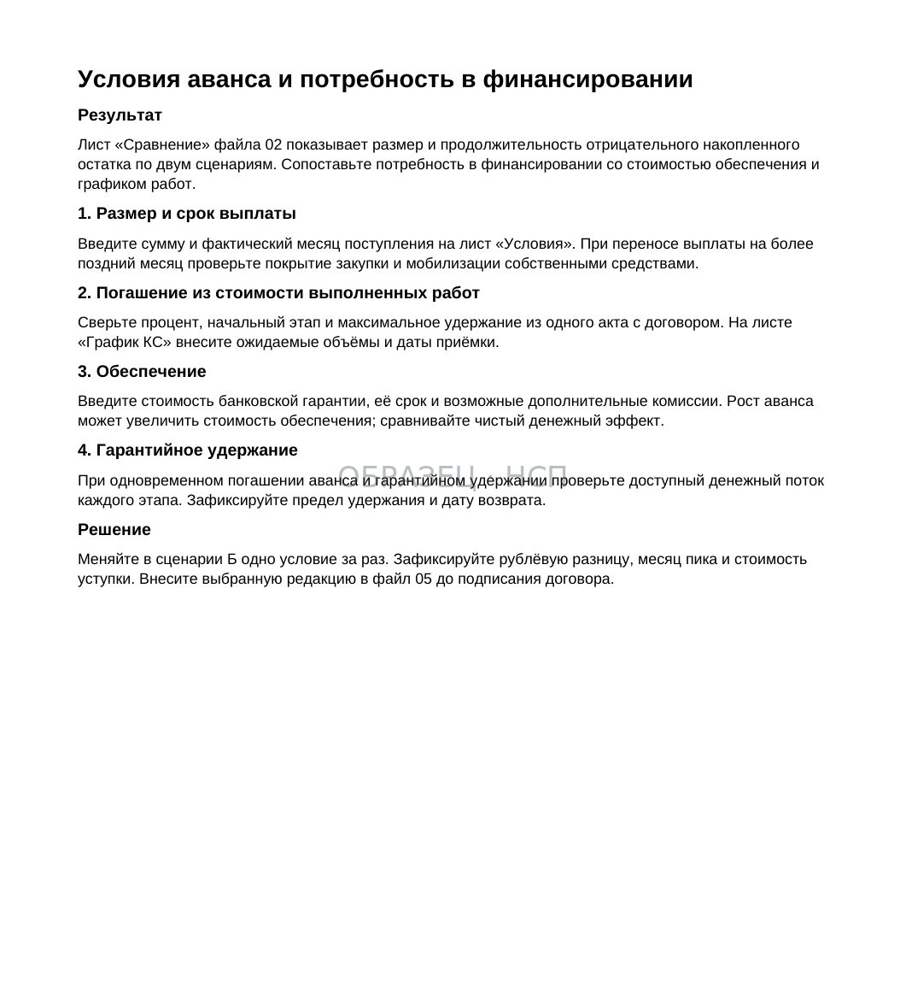
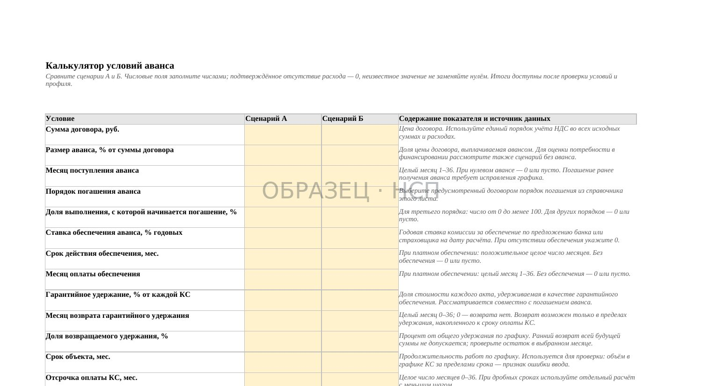
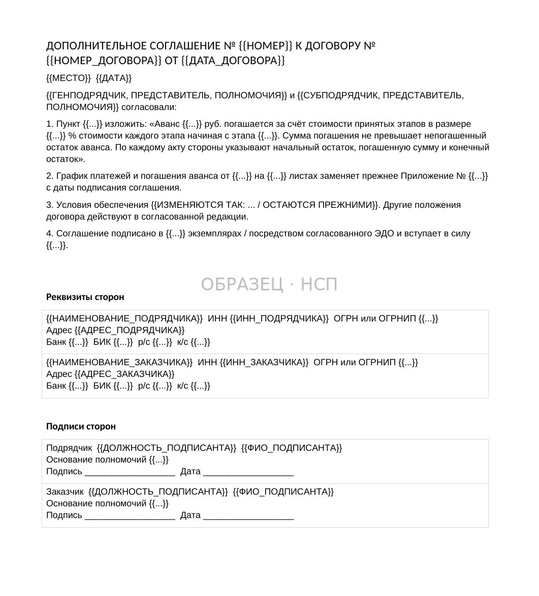
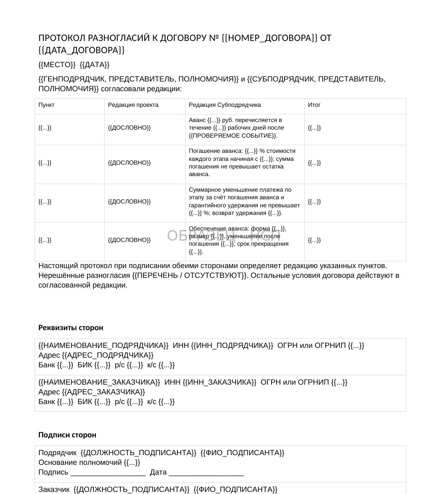

АВАНС / ДО ПОДПИСАНИЯ
Аванс по договору подряда: как согласовать выплату и погашение до начала работ
Обновлено 11 ноября 2026
Что проверить подрядчику в условиях об авансе, как связать финансирование с календарным планом и согласовать порядок погашения, чтобы не создавать необоснованный кассовый разрыв.
При подготовке договора субподряда стороны обычно обсуждают размер аванса. Однако для подрядчика не менее существенны дата его выплаты, перечень условий получения, порядок погашения из промежуточных платежей и связь финансирования со сроками производства работ.
Договор может предусматривать аванс в размере 30% цены работ, но одновременно требовать до его перечисления банковскую гарантию, предоставление нескольких согласованных графиков и подписание дополнительных документов. Если сроки выполнения работ начинают течь раньше поступления денег, первоначальные расходы фактически финансирует подрядчик.
Оценивать условие об авансе следует вместе с календарным планом, графиком платежей и порядком приёмки работ. Отдельная цифра в договоре не показывает, достаточно ли финансирования для выполнения обязательств.
1. Определите, существует ли право на получение аванса
Обязанность заказчика выдать аванс должна иметь правовое основание.
По пункту 2 статьи 711 ГК РФ подрядчик вправе требовать аванс или задаток в случаях и в размере, предусмотренных законом либо договором подряда.
Поэтому обещание перечислить деньги во время переговоров не заменяет согласованное условие. Необходимо проверить, включена ли обязанность выплаты в договор, каким образом определяется сумма и кто является должником по этому обязательству.
Аванс и задаток не следует считать взаимозаменяемыми понятиями: у этих платежей могут быть разные правовые последствия.
Для строительного подряда дополнительно имеет значение статья 746 ГК РФ о порядке расчётов с учётом условий договора.
2. Установите размер и назначение аванса
Размер аванса можно определить твёрдой суммой, процентом от цены договора или величиной, связанной с конкретным этапом. При этом необходимо выяснить, от какой именно базы он рассчитывается.

Например, формулировка «аванс 20% стоимости работ» может вызвать разногласия, если цена включает отдельные этапы, изменяемые объёмы или предусмотренные договором корректировки.
Соглашение желательно проверить по следующим вопросам:
- Указана ли конкретная сумма или однозначный способ её расчёта.
- Выплачивается аванс одним платежом или несколькими траншами.
- Как аванс распределяется между этапами и видами работ.
- Изменяется ли размер финансирования при согласованной корректировке цены.
- Как учитываются материалы, оборудование и работы, предоставляемые заказчиком.
- Нужно ли подтверждать целевое использование и каким способом.
Если аванс предназначен для закупки определённых материалов или оборудования, следует заранее согласовать подтверждающие документы и порядок учёта таких расходов.
Пример. Цена этапа — 12 млн ₽, аванс — 25%, то есть 3 млн ₽. Если договор предполагает два транша по 1,5 млн ₽, необходимо указать срок и условия каждого перечисления. Само указание общей суммы в 3 млн ₽ не означает, что вся сумма поступит до начала работ.
3. Зафиксируйте срок выплаты и событие, от которого он считается
Формулировки «после подписания договора» и «после предоставления документов» недостаточны, если невозможно определить, когда именно наступает обязанность перечислить деньги.
В договоре целесообразно согласовать конкретный срок: календарную дату либо определённое число рабочих или календарных дней после однозначно установленного события.
Нужно проверить, от какого момента исчисляется срок: подписания обеими сторонами, передачи предусмотренного обеспечения, получения счёта, согласования графика или иного обстоятельства.
Если договор связывает выплату с несколькими условиями, важно определить, должны ли они выполняться одновременно и кто подтверждает их выполнение.
Срок, привязанный к неопределённому «согласованию с финансовой службой», требует отдельной проверки. Внутреннее согласование заказчика не должно оставлять подрядчика без ясного механизма определения даты платежа.
При отсутствии определимого срока следует оценивать условия договора и применимые нормы о сроках исполнения обязательств, в том числе статью 314 ГК РФ.
4. Согласуйте закрытый перечень документов для получения денег
Выплата аванса может зависеть от передачи определённых документов: счёта, календарного плана, договора страхования, банковской гарантии, подтверждений допуска на объект или иной предусмотренной договором документации.
Проблема возникает, если вместо конкретного перечня в договоре используется формулировка «и другие документы по требованию заказчика».
В результате у подрядчика отсутствует возможность заранее определить полноту выполнения условий получения финансирования.
Для проверки рекомендуется составить отдельную таблицу: наименование документа, кто его подготавливает, кому передаёт, срок проверки и способ подтверждения получения.
Следует также определить, вправе ли заказчик возвращать документы на доработку, по каким основаниям, в какой срок и как это влияет на дату аванса.
Если требуется банковская гарантия возврата аванса, необходимо заранее проверить стоимость её оформления, условия выдачи, срок действия и требования к тексту гарантии.
Подробнее об обеспечении — «Банковская гарантия на возврат аванса».
5. Сопоставьте график финансирования с производственными расходами
Размер аванса сам по себе не показывает, достаточно ли средств для начала строительства.

Необходимо составить прогноз движения денежных средств по объекту: когда возникают расходы на материалы, бригады, механизмы, субподрядчиков и логистику, когда поступает аванс и когда ожидаются платежи за принятые объёмы.
Для оценки удобно сравнить как минимум два сценария:
Сценарий А — аванс поступает до начала работ. Подрядчик использует полученные средства для покрытия первоначальной потребности.
Сценарий Б — аванс перечисляется позже. Те же расходы возникают до финансирования, поэтому образуется временный кассовый разрыв.
Сравнивать следует не только общий объём расходов, но и максимальный отрицательный накопленный остаток, а также продолжительность периода, когда работы требуют собственных или привлечённых денег.
Пример. За первые 20 дней подрядчику требуется 2,4 млн ₽. Если аванс 3 млн ₽ поступит в первый день, первоначальные затраты покрыты. Если деньги придут на 25-й день, подрядчику потребуется временное финансирование до 2,4 млн ₽, даже если общая сумма аванса остаётся прежней.
Фактическая потребность зависит от графика работ и платежей. Для принятия решения следует использовать реальные даты и суммы, а не только процент аванса.
6. Свяжите начало работ с обязанностями заказчика
Отдельно необходимо проверить, когда начинается срок выполнения работ: с даты подписания договора, передачи строительной площадки, выдачи документации или иного определённого события.
Если договор одновременно предусматривает ранний старт работ и более позднюю выплату необходимого финансирования, подрядчик должен оценить возможность исполнения графика без получения аванса.
При нарушении встречных обязательств могут применяться статья 328 ГК РФ и статья 719 ГК РФ.
Однако отсутствие аванса не даёт подрядчику автоматического права остановить любые работы. Необходимо проверить, обусловлено ли его исполнение встречным обязательством заказчика, какое нарушение произошло, препятствует ли оно выполнению и что установлено договором.
Если возникают основания для приостановления, важны своевременное письменное уведомление, фиксация обстоятельств и соблюдение применимого порядка.
Согласовать производственный график и финансовые условия до подписания обычно проще, чем доказывать последствия задержки финансирования после начала работ.
7. Установите порядок погашения аванса
Погашение аванса — это зачёт ранее полученного финансирования в оплату выполненных работ в порядке, согласованном сторонами.

При составлении договора следует ответить на вопросы:
- С какого акта или этапа начинается погашение.
- Какой процент промежуточного платежа направляется на погашение.
- Допускается ли иной график — по фиксированным суммам или этапам.
- Как учитываются частично принятые работы.
- Что происходит при изменении цены или календарного плана.
- Когда сумма аванса считается полностью погашенной.
Не нужно смешивать выдачу аванса с его погашением. Первый процесс определяет поступление денег подрядчику, второй — уменьшение авансового остатка в ходе расчётов за выполненные работы.
Если аванс погашается чрезмерно быстро, подрядчик может потерять оборотные средства в период максимальных производственных затрат.
Порядок погашения лучше оформить как отдельный пункт договора или приложение с примерами расчёта.
8. Проверьте совокупное влияние удержаний на промежуточный платёж
Помимо погашения аванса, договор может предусматривать гарантийное удержание и другие допустимые корректировки расчётов.
Поэтому важно заранее определить, какая сумма реально поступит подрядчику после подписания очередных актов.
Условный расчёт. Стоимость принятых за период работ — 2 млн ₽. Из промежуточного платежа погашается 30% аванса, то есть 600 000 ₽, и применяется гарантийное удержание 5%, то есть 100 000 ₽.
2 000 000 − 600 000 − 100 000 = 1 300 000 ₽.
Пример отражает лишь один согласованный вариант расчётов. В конкретном договоре база погашения и удержаний, порядок учёта НДС, корректировок и задолженности могут отличаться.
Если подрядчик планировал получить по акту все 2 млн ₽, разница в 700 000 ₽ может стать существенной для оплаты материалов и труда.
Проверяйте совместное действие условий об авансе, гарантийном удержании и сроках оплаты, а не каждый пункт отдельно.
9. Определите порядок действий при изменении объёма и срока работ
Изменения проектных решений, дополнительные работы и переносы сроков могут повлиять на потребность в финансировании.
Договор должен позволять определить, что происходит с авансом при увеличении или уменьшении объёмов, изменении этапов и остановке отдельных видов работ.
Не следует предполагать, что изменение стоимости договора автоматически увеличивает сумму аванса на тот же процент. Для дополнительного финансирования может потребоваться отдельное соглашение.
В дополнительном соглашении важно зафиксировать новую сумму, даты перечисления, порядок погашения и связь с обновлённым календарным планом.
При передаче дополнительных работ следует также проверять наличие правового основания для их выполнения и оплаты. Отдельный порядок приведён в статье «Дополнительные работы в строительстве».
10. Согласуйте спорные пункты до подписания
Если предложенная заказчиком редакция создаёт необоснованный финансовый риск, подрядчику целесообразно подготовить конкретное предложение по её изменению.

Удобный инструмент — протокол разногласий, в котором указываются номер пункта, исходная формулировка, предлагаемая редакция и итог согласования.
Для условий об авансе обычно целесообразно отдельно согласовывать дату выплаты, перечень обязательных документов, порядок начала работ, график погашения и последствия просрочки финансирования.
Направленный протокол разногласий не означает автоматического принятия правок заказчиком. Итоговая редакция должна быть надлежащим образом согласована сторонами.
Проверить необходимо не только договор, но и все связанные приложения: календарный план, график платежей, смету и условия обеспечения.
Общий порядок — в статье «Протокол разногласий к договору».
11. Если договор уже подписан, а аванс не поступил
Сначала необходимо проверить, наступил ли срок выплаты и выполнены ли предусмотренные договором условия со стороны подрядчика.
Подготовьте договор, счета, документы о передаче обеспечения, подтверждения направления необходимых приложений и сведения о фактически полученных платежах.
Если обязанность заказчика наступила, целесообразно направить письменное требование о перечислении согласованного аванса с указанием основания, суммы, даты наступления срока и реквизитов.
Вопрос о приостановлении работ следует рассматривать отдельно. Для него недостаточно одного факта неоплаты: нужно оценить договор, встречный характер обязательств и применимые нормы, а также правильно зафиксировать уведомления.
Если после задержки финансирования стороны согласовывают изменение срока выполнения работ, договорённость желательно оформить письменно с учётом фактического графика.
12. Не смешивайте порядок погашения с возвратом неотработанного аванса
Погашение аванса в ходе исполнения договора и возврат неотработанной суммы после прекращения обязательств — различные ситуации.
При обычном исполнении часть полученных денег учитывается в промежуточных расчётах за принятый результат.
При прекращении договора необходимо установить произведённые платежи, выполненные и доказанные работы, условия расчётов и существующие встречные требования. Сам по себе размер первоначального аванса не всегда совпадает с суммой, которую подрядчик обязан вернуть.
Для оценки требования заказчика используется отдельный порядок: «Возврат аванса по договору подряда: первые действия» и «Неотработанный аванс: как рассчитать остаток».
Если заказчик потребовал немедленно погасить аванс при действующем договоре, необходимо отдельно проверить правовое основание такого требования. Сроки и основания досрочного возврата нельзя определять по одной общей формулировке без анализа остальных условий.
13. Проверьте договор перед подписанием
По итогам переговоров у подрядчика должны быть проверяемые ответы на следующие вопросы:
Сумма. Сколько денег должно поступить и по каким этапам.
Срок. Когда заказчик обязан перечислить каждый транш.
Документы. Что нужно передать для выплаты и как подтверждается полнота комплекта.
Начало работ. С какого события начинается исполнение и как учитываются задержки финансирования.
Погашение. Какой процент или сумма удерживается из промежуточных платежей.
Другие удержания. Как гарантийные и прочие предусмотренные договором корректировки влияют на сумму к оплате.
Изменения. Кто и каким документом согласует новое финансирование при изменении объёмов и сроков.
Разногласия. Какие редакции приняты сторонами, а какие требуют дополнительного согласования.
Согласование этих условий не гарантирует своевременное поступление денег, но позволяет определить договорные обязанности и подготовить доказательства их нарушения.
14. Документы для согласования и учёта аванса
В линейке «На стороне подрядчика» представлен комплект «Авансы и расчёты по договору подряда».
В действующей поставке — 12 файлов: 9 Word, 2 Excel и 1 PDF. В их составе находятся калькулятор условий аванса, разбор четырёх вариантов, алгоритм переговоров, протокол разногласий, дополнительное соглашение о погашении аванса, требование о выплате, расчёт отработанной части и документы для ответа на требование заказчика.
Стоимость — 24 900 ₽.
Калькулятор помогает сопоставлять сценарии финансирования по введённым данным. Расчёт отработанной части позволяет составить финансовое сальдо, однако сам по себе не определяет юридическую обязанность вернуть деньги: основания возврата проверяются по договору и фактическим обстоятельствам.
Рабочие формы необходимо адаптировать к конкретному объекту, согласованным срокам, составу работ и реальным платёжным документам.
Главный вывод
Условия об авансе необходимо оценивать в связке с договорной ценой, календарным планом, порядком приёмки и промежуточными расчётами.
Для подрядчика существенны не только размер аванса, но и определимость даты его выплаты, закрытый перечень условий получения, реалистичный график погашения и возможность исполнения работ без непредусмотренного финансирования.
Чем раньше эти условия будут согласованы и отражены в документах, тем меньше вероятность, что обещанное авансирование превратится в кассовый разрыв уже после начала строительства.
КОМПЛЕКТ P8 / 12 ФАЙЛОВ
Авансы и расчёты по договору подряда
Калькулятор условий аванса, протокол разногласий, дополнительное соглашение, формы требования и ответа заказчику. 9 Word, 2 Excel и 1 PDF.
24 900 ₽
Посмотреть состав комплекта P8БЕСПЛАТНО, ЗА EMAIL
Аванс и обеспечение: что проверить до подписи
Проверочный лист ровно под таблицу из первого раздела: что должно быть записано в пункте об авансе и какими словами условие делается неисполнимым. Помесячного расчёта заморозки в бесплатном наборе нет, он в комплекте выше.
- Проверочный лист условий аванса
- Реестр изъятий по объекту
- Формулировки-ловушки
- Запрос об условиях аванса